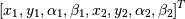
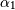
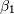
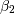

LaviRot.elements.ShaftElement(n, L, i_d, o_d, E, G_s, rho, axial_force=0, torque=0, shear_effects=False, rotary_inertia=False, gyroscopic=True)[source]¶A shaft element.
This class will create a shaft element that may take into account shear, rotary inertia an gyroscopic effects. The matrices will be defined considering the following local coordinate vector:

Where  and are the bending on the yz plane and  and  are the bending on the xz plane.
| Parameters: | n : int
L : float
i_d : float
o_d : float
E : float
G_s : float
rho : float
axial_force : float
torque : float
shear_effects : bool
rotary_inertia : bool
gyroscopic : bool
|
|---|
References
| [R2] | (1, 2) ‘Dynamics of Rotating Machinery’ by MI Friswell, JET Penny, SD Garvey & AW Lees, published by Cambridge University Press, 2010 pp. 158-166. |
Examples
>>> n = 1
>>> le = 0.25
>>> i_d = 0
>>> o_d = 0.05
>>> E = 211e9
>>> G_s = 81.2e9
>>> rho = 7810
>>> Euler_Bernoulli_Element = ShaftElement(n, le, i_d, o_d, E, G_s, rho)
>>> Euler_Bernoulli_Element.phi
0
>>> Timoshenko_Element = ShaftElement(n, le, i_d, o_d, E, G_s, rho,
... rotary_inertia=True,
... shear_effects=True)
>>> Timoshenko_Element.phi
0.08795566502463055
Attributes
| poisson | (float) Poisson coefficient for the element. |
| A | (float) Element section area. |
| Ie | (float) Ie is the second moment of area of the cross section about the neutral plane Ie = pi*r**2/4 |
| phi | (float) Constant that is used according to [R2] to consider rotary inertia and shear effects. If these are not considered phi=0. |
Methods
M()[source]¶Mass matrix for an instance of a shaft element.
| Returns: | Mass matrix for the shaft element. |
|---|
Examples
>>> Timoshenko_Element = ShaftElement(1, 0.25, 0, 0.05, 211e9, 81.2e9, 7810,
... rotary_inertia=True,
... shear_effects=True)
>>> Timoshenko_Element.M()[:4, :4]
array([[ 1.42050794, 0. , 0. , 0.04931719],
[ 0. , 1.42050794, -0.04931719, 0. ],
[ 0. , -0.04931719, 0.00231392, 0. ],
[ 0.04931719, 0. , 0. , 0.00231392]])
K()[source]¶Stiffness matrix for an instance of a shaft element.
| Returns: | Stiffness matrix for the shaft element. |
|---|
Examples
>>> Timoshenko_Element = ShaftElement(1, 0.25, 0, 0.05, 211e9, 81.2e9, 7810,
... rotary_inertia=True,
... shear_effects=True)
>>> Timoshenko_Element.K()[:4, :4]/1e6
array([[ 45.69644273, 0. , 0. , 5.71205534],
[ 0. , 45.69644273, -5.71205534, 0. ],
[ 0. , -5.71205534, 0.97294287, 0. ],
[ 5.71205534, 0. , 0. , 0.97294287]])
G()[source]¶Gyroscopic matrix for an instance of a shaft element.
| Returns: | Gyroscopic matrix for the shaft element. |
|---|
Examples
>>> Timoshenko_Element = ShaftElement(1, 0.25, 0, 0.05, 211e9, 81.2e9, 7810,
... rotary_inertia=True,
... shear_effects=True)
>>> Timoshenko_Element.G()[:4, :4]
array([[-0. , -0.01943344, -0.00022681, -0. ],
[-0.01943344, -0. , -0. , -0.00022681],
[ 0.00022681, -0. , -0. , 0.0001524 ],
[-0. , 0.00022681, -0.0001524 , -0. ]])